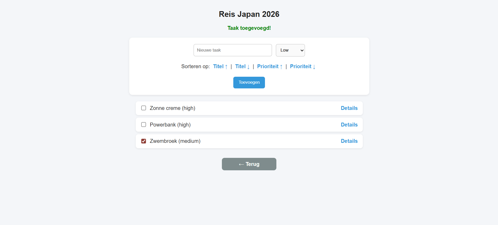
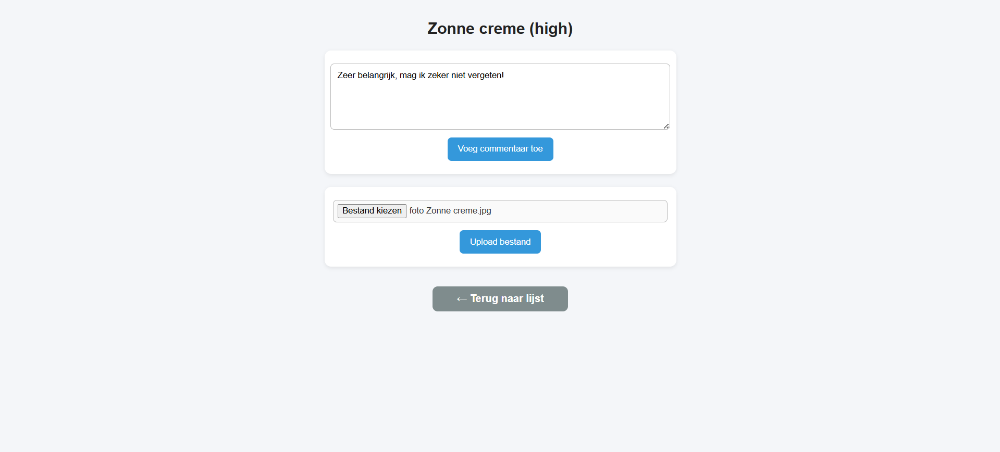

PlanYourTrip.be — To-Do Planner
PlanYourTrip.be is een PHP-gedreven webapplicatie (eindwerk voor het vak Backend Development) waarmee je een persoonlijke to-do lijst samenstelt en beheert. Gebruikers kunnen taken aanmaken, prioriteiten toekennen (bijv. Minder belangrijk, Belangrijk, Extreem belangrijk), een beschrijving en foto toevoegen, en items afvinken zodra ze voltooid zijn. Zo blijf je overzicht houden vanaf de eerste idee tot de laatste.
Belangrijkste features
- To-do lijsten per reis met CRUD-acties (aanmaken, bewerken, verwijderen).
- Prioriteiten per taak: Minder belangrijk, Belangrijk, Extreem belangrijk.
- Beschrijving & foto-upload per item.
- Afvinken/schrappen van afgewerkte taken.
- Filteren en sorteren op status en prioriteit.
Ontwikkelproces
Backend & database
PlanYourTrip.be is gebouwd als eindwerk voor het vak Backend Development, met PHP en een relationele database als fundament. Ik ontwierp het datamodel rond taken, prioriteiten en bijlagen, en bouwde de volledige CRUD-functionaliteit (aanmaken, bewerken, verwijderen) zelf uit, inclusief validatie en foutafhandeling.
Gebruikerservaring
Bij de interface lag de focus op overzicht: gebruikers zien in één oogopslag welke taken dringend zijn dankzij het prioriteitensysteem, en kunnen snel een foto of beschrijving toevoegen aan elk item. De applicatie is volledig responsief, zodat een to-do lijst even vlot beheerd kan worden op desktop als onderweg op mobiel.
Resultaat
Een functionele PHP-webapp met takenbeheer, prioriteiten, bijlagen en statusupdates. Hieronder enkele mockups/screens:



Uitdagingen & oplossingen
Een datamodel dat meegroeit
Taken, prioriteiten en bijlagen leken op het eerste zicht eenvoudig te modelleren, maar zodra filteren en sorteren erbij kwamen, moest de databasestructuur flexibel genoeg zijn om uitbreidingen toe te laten zonder alles te herschrijven. Ik koos voor een genormaliseerd datamodel met duidelijke relaties tussen taken en hun eigenschappen, wat het later ook eenvoudiger maakte om filters en sorteeropties toe te voegen.
Veilig omgaan met bestanden
Foto-uploads brengen altijd extra aandachtspunten met zich mee: bestandsgrootte, toegelaten formaten en het voorkomen van ongeldige of schadelijke uploads. Ik bouwde serverside validatie in voor elk geüpload bestand en zorgde voor duidelijke foutmeldingen wanneer een upload niet voldeed, zodat de gebruikerservaring ook bij fouten prettig blijft.
Context & doel
PlanYourTrip.be werd gebouwd als eindwerk voor het vak Backend Development, met als doel om een volledig werkende PHP-applicatie met database-integratie zelfstandig te ontwikkelen — van datamodel en server-logica tot een bruikbare, opgeruimde interface. Hoewel de naam verwijst naar reisplanning, is de kern een generieke, herbruikbare to-do-structuur die evengoed inzetbaar is voor dagelijkse taken of projectbeheer.
Wat ik hieruit geleerd heb
Dit project gaf me een grondige basis in backend-development: van het opzetten van een database en het schrijven van veilige CRUD-logica, tot het bewaken van een consistente gebruikerservaring doorheen de hele applicatie. Ik leerde ook hoe belangrijk foutafhandeling en validatie zijn zodra echte gebruikers met een applicatie aan de slag gaan, en hoe een doordacht datamodel je later veel tijd bespaart wanneer je nieuwe features wil toevoegen.
Volgende stappen
Voor een volgende versie van PlanYourTrip.be zou ik gebruikersaccounts en gedeelde takenlijsten toevoegen, zodat meerdere mensen samen een reis of project kunnen plannen en opvolgen. Ook een systeem van herinneringen en deadlines per taak, gekoppeld aan e-mail- of pushmeldingen, zou de applicatie praktischer maken voor dagelijks gebruik in plaats van enkel reisplanning. Tot slot zou ik de front-end willen moderniseren met een JavaScript-framework zoals React, om de interface vlotter en dynamischer te maken zonder dat de volledige pagina telkens opnieuw moet laden — een logische volgende stap nu ik met RoadMate en dit portfolio al ervaring heb opgedaan met React.
Tools & werkwijze
Voor de ontwikkeling van PlanYourTrip.be gebruikte ik PHP in combinatie met een MySQL-database, aangestuurd via PDO voor veilige, geparametriseerde queries. Ik bouwde de applicatie op volgens het MVC-principe: een duidelijke scheiding tussen de databaselaag, de logica die taken verwerkt en de HTML-templates die alles tonen aan de gebruiker. Die structuur maakte het makkelijker om functionaliteit stap voor stap toe te voegen zonder de bestaande code te breken. Sessiebeheer zorgt ervoor dat gebruikers ingelogd blijven tijdens het beheren van hun taken, en ik voorzag duidelijke server-side foutmeldingen bij ongeldige invoer, zodat problemen meteen zichtbaar zijn in plaats van stil te falen. Voor het testen van de applicatie werkte ik met een lokale ontwikkelomgeving, waarna de definitieve versie live werd gezet op planyourtrip.be. Doorheen het hele proces lag de nadruk op een pragmatische, stap-voor-stap werkwijze: eerst de kernfunctionaliteit volledig laten werken, en pas daarna extra features zoals prioriteiten, foto-uploads en filters toevoegen. Die aanpak zorgde ervoor dat de applicatie op elk moment in het ontwikkelproces bruikbaar en stabiel bleef, ook wanneer een nieuwe feature nog niet volledig was afgewerkt, wat het testen en bijsturen onderweg een pak eenvoudiger maakte. Achteraf bekeken was net die gefaseerde werkwijze een van de belangrijkste redenen waarom het project op tijd en zonder grote technische problemen is afgerond. Het is een werkwijze die ik sindsdien bij elk nieuw project probeer toe te passen, ongeacht de grootte of complexiteit ervan.